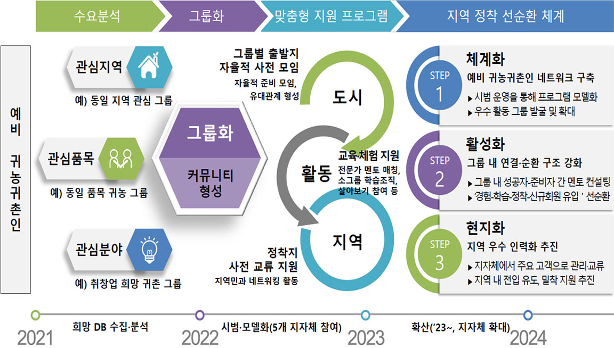

프로그램 개요
1. 사업목적
- 귀농귀촌 희망자들 그룹화, 이주 지역 중심 네트워크 구축을 통한 희망 지역에 안정적 정착을 지원합니다.
2. 주요활동
- 유사 관심사(지역, 품목 등)를 가진 예비 귀농귀촌인이 함께 준비할 수 있도록 커뮤니티 운영
- ➀ 출발지(거주지 인근)에서 그룹별 자율활동
- ➁ 희망 지역 현장 탐방, 교육 참여 및 지역 전문가 멘토 매칭
※ 희망지역 : 강원 양양, 충북 괴산, 충남 부여, 전북 김제, 경북 상주
3. 사업안내
